Silicon Valley, with a bright economic future, is now facing a serious pollution crisis, including dust pollution, chemical pollution, water pollution and health problems. So we are thinking about finding an ecological method to dream a new future for silicon valley, to protect the native species.
After doing a lot of research, I realized that saving a random species isn’t going to help silicon Valley build a stable ecosystem. So this ecological future needs an important starting point. I find that Bay Checkerspot Butterfly is a key umbrella species that protects many native animals and plants in Silicon Valley. As an important pollinator, this means the tiny butterfly can provide protection for a wide variety of native animals and plants. Therefore, it seems like butterflies can help build a new ecological future in Silicon Valley.
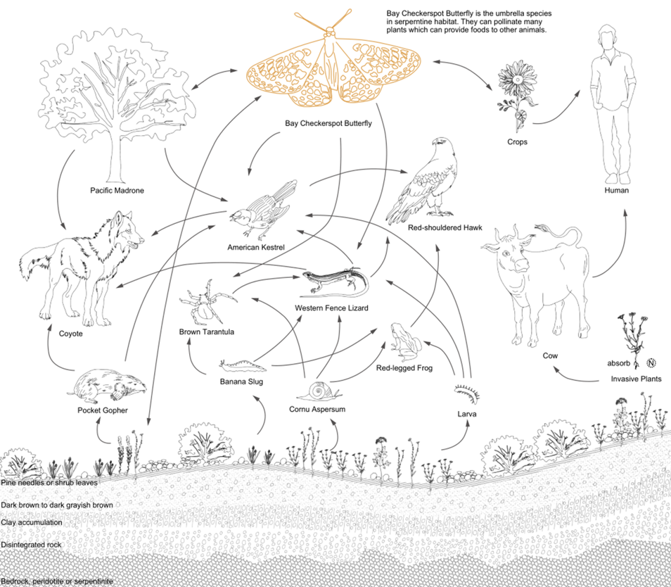
However, in the study of bay checkerspot butterfly, it was found that they are rapidly declining. It’s imperative and imminent that we should pay more attention to such important species. Therefore, the goal of this project was to generate a suitability map and find out where the best places to build butterfly habitats are in San Jose. The result will be an important start point to start an ecological future.
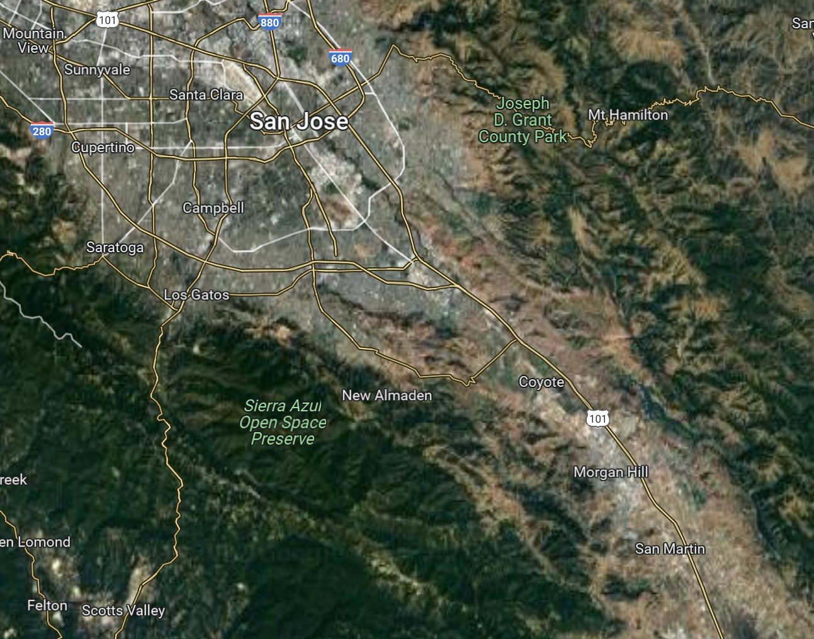
- Researching needs of Bay Checkerspot Butterfly
- Divide the needs of different life stages
- Collecting data
- Shapefile to geopandas
- Buffer and kernel density
- History maps to geopandas
- History maps to geopandas
- Data overlay
- Suitability of caterpillar phase
- Suitability of butterfly phase
- Suitability of Bay Checkerspot Butterfly
California plants Data: https://www.calflora.org/app/taxon?crn=1690
California plants Data: https://www.calflora.org/app/taxon?crn=1695
California plants Data: https://www.calflora.org/app/taxon?crn=6615
California plants Data: https://www.calflora.org/app/taxon?crn=4952
California plants Data: https://www.calflora.org/app/taxon?crn=4649
California plants Data: https://www.calflora.org/app/taxon?crn=4577
Land Use Classification Data: https://gisdata-csj.opendata.arcgis.com/pages/tree-canopy-and-land-use-classification
Aerial Imagery and Elevation: https://gisdata-csj.opendata.arcgis.com/pages/imagery-and-elevation
Road System Data: https://gisdata-csj.opendata.arcgis.com/maps/CSJ::public-street
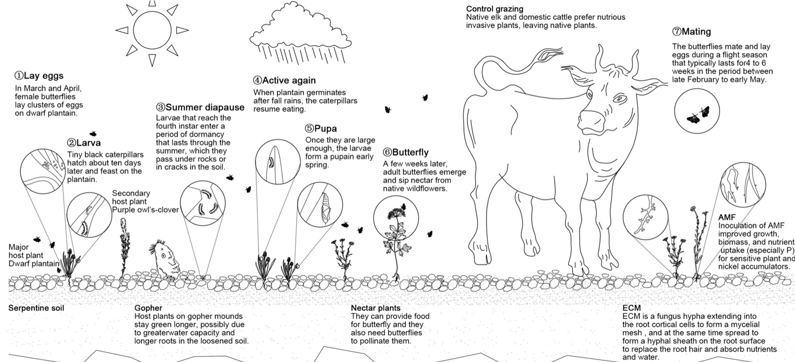
Caterpillars and butterflies have different ranges of activities, so the key findings focus on habitats that are suitable for two stages of the butterfly’s life cycle, including Caterpillar stage, butterfly stage. This classification can make the results of the assessment more accurate.
In this part, I used python(mostly geopandas) to generate to distributions of certain needs of the bay chekerspot butterfly, and overlay the distribution and topography to help people better understand the context. At the same time, rate diffrent kinds of needs, the most suitable one for caterpillars or butterflies to live wins the highest point. This rating systerm can help quantify the overall analysis process and help create the final suitability map in the next step.
First, in the caterpillar stage, my key finding is that caterpillars need to hang on small shrubs to absorb heat from the ground. So we use geopandas to visualize the distribution of four kinds of low shrubs using the landcover data. There are four different colors in this map representing these shrubs.
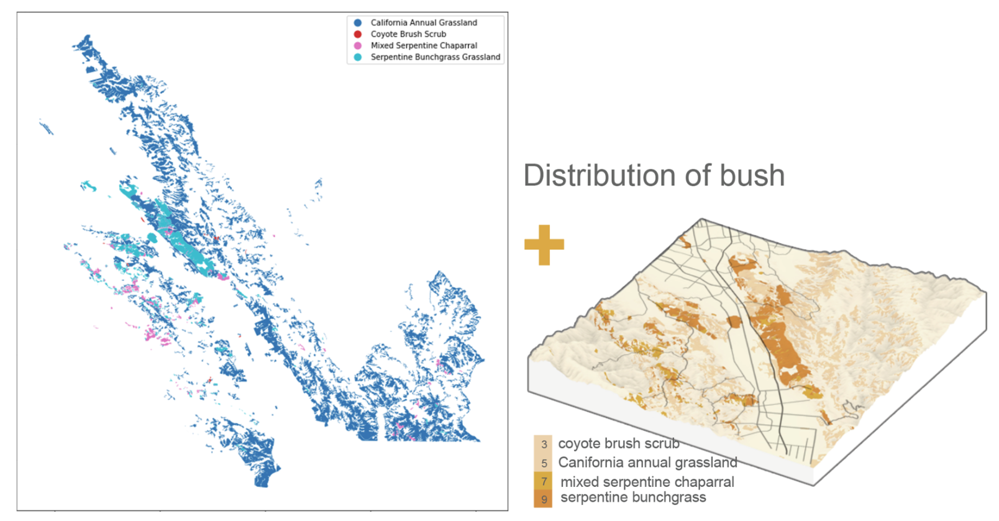
Caterpillars should be near ridge lines because butterflies need to spawn and mate at ridgelines. So I used elevation data to generate the ridgelines and visualized the distribution of ridgelines through geopandas.
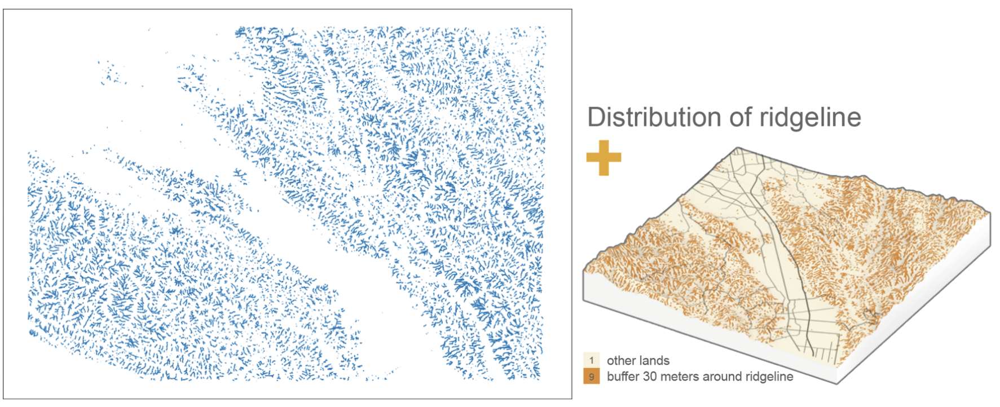
Caterpillars need to diapause in serpentine soil. The soil has many cracks which allows butterfly larvae or chrysalises to live in and prevents animals from trampling on caterpillars. The source of the soil data is from a historic distribution map, I used georeference tools to get the coordinates, and finally generate the area in geopandas.
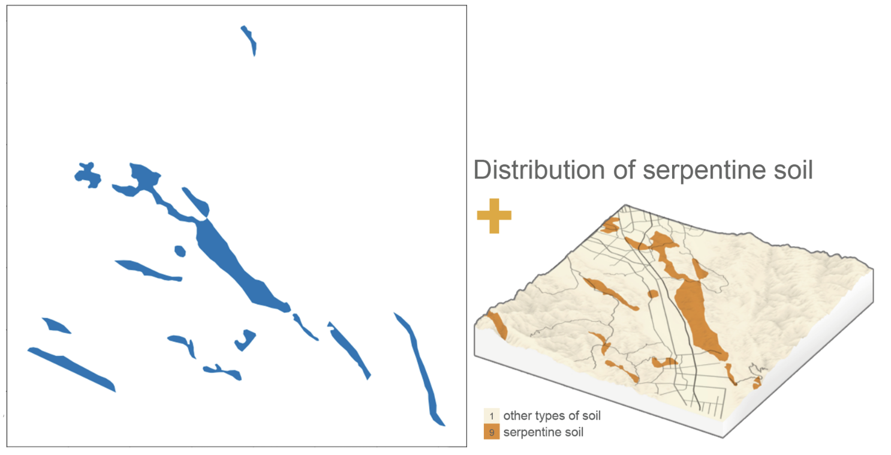
Caterpillars also need host plants for food, then I found three main host plants for caterpilars. And I used geopandas to show the locations of the host plants.
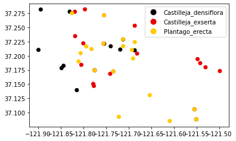
But I found that the points are too small to generate a suitability map when overlay those layers, so I changed those point data to Kernel Density of host plants.
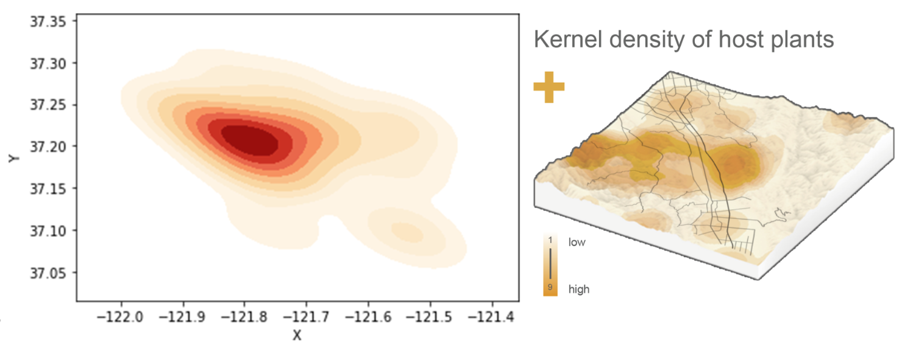
Nitrogen dioxide produced by roads would encourage the growth of invasive species, these invasive species are main threats for host plants which are native to California. Therefore, the area within 200 meters of the road is very bad for caterpillars. I set up a 200-meter buffer for the road in Python, and the area inside the buffer gets only one point, while the area outside the buffer gets nine points.
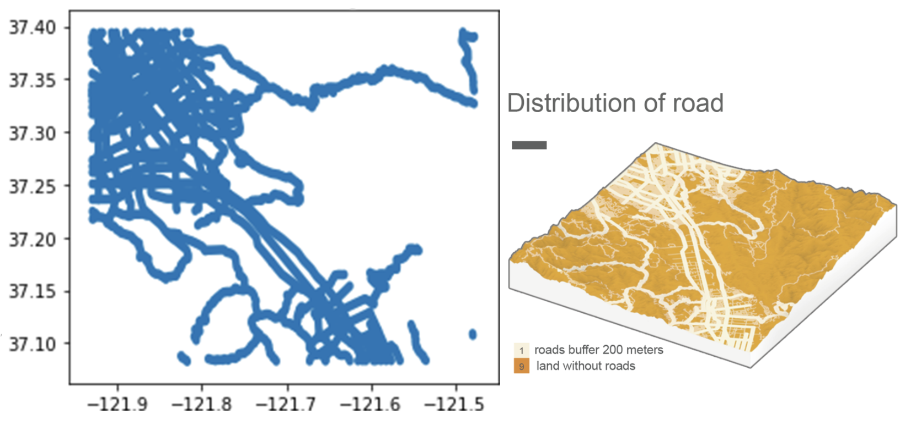
I also took land use into account because human developments have an impact on bay checkerspot butterfly. This is a map showing distribution of developed lands with different land use. Depending on how much damage they do to the butterflies, they get different points.
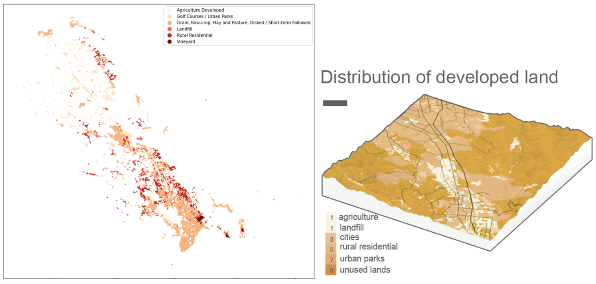
In the Butterfly Stage, butterflies also need nectar plants for food. Here is the distribution of the nectar plants of bay checkerspot butterfly.
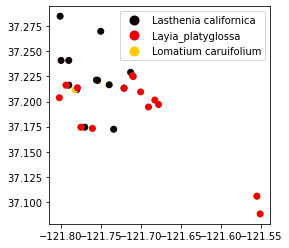
I used the same method to get the Kernel Density of nectar plants.
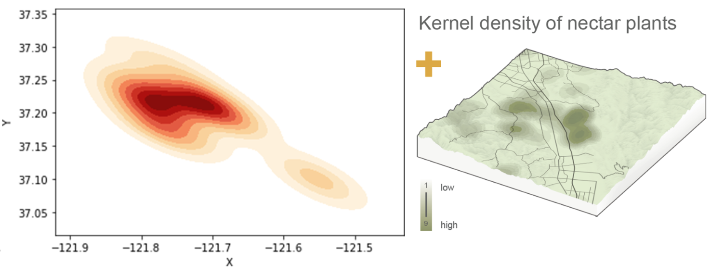
Butterflies need ridgelines to mate, and I also get the distribution of Ridgelines as well as a 200 meter buffer because butterflies and caterpillars have different flying abilities.
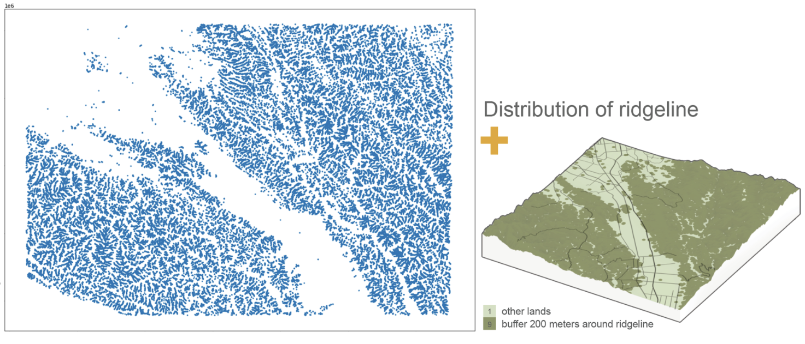
I also get the distribution of wetlands in San Jose because butterflies need waterlands for drinking water.
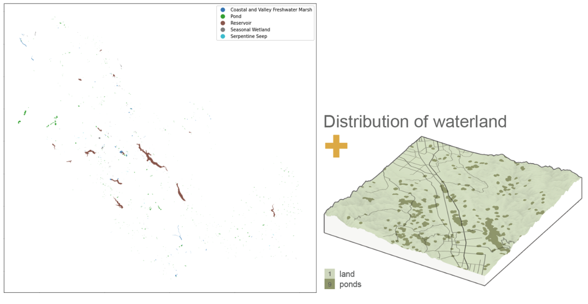
Eventually, I used raster calculator to combine all layers to two suitability maps respectively for Caterpillar and Butterfly. Because in the previous stage, we graded each cell in each layer. Now each cell in different layers has different scores. I reclassified the scores in each image and add the scores of each pixel in different images to form two suitable maps for both butterflies and caterpillars. And overlay the two suitability map to get the fianl suitability map.
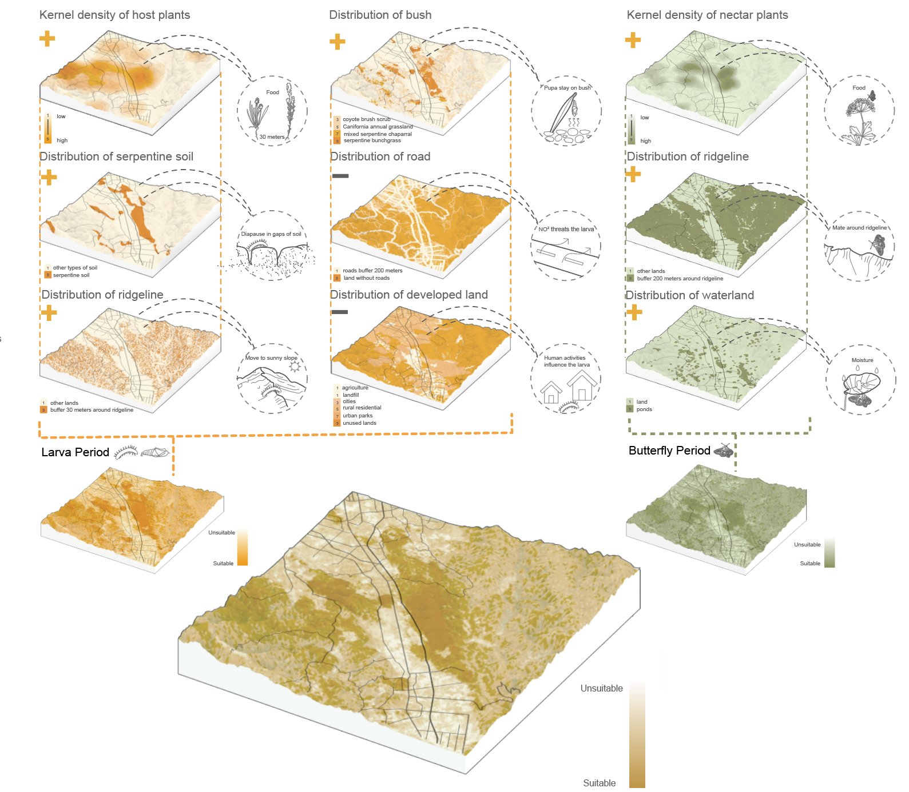
In the future, these area with the highest scores will have the biggist chance to build a habitat for bay checkerspot butterfly. Once the butterfly species are established, the native plants and animals under the “umbrella” will be protected, and the chance of an ecological future of Silicon Valley will be established.
https://en.wikipedia.org/wiki/Bay_checkerspot_butterfly
https://www.epa.gov/sites/default/files/2013-08/documents/bay-checkerspot-butterfly.pdf
https://www.biologicaldiversity.org/species/invertebrates/Bay_checkerspot_butterfly/index.html
https://ecos.fws.gov/ecp/species/2320
https://friendsofedgewood.org/learn-about-edgewood-park/bay-checkerspot-butterfly
https://creeksidescience.com/projects/bay-checkerspot-butterfly-conservation/